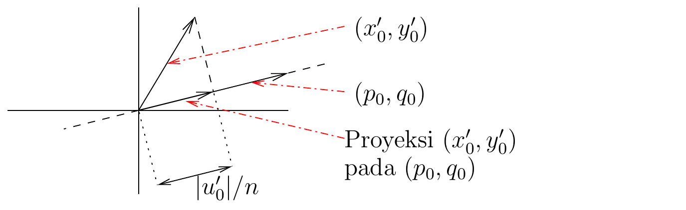
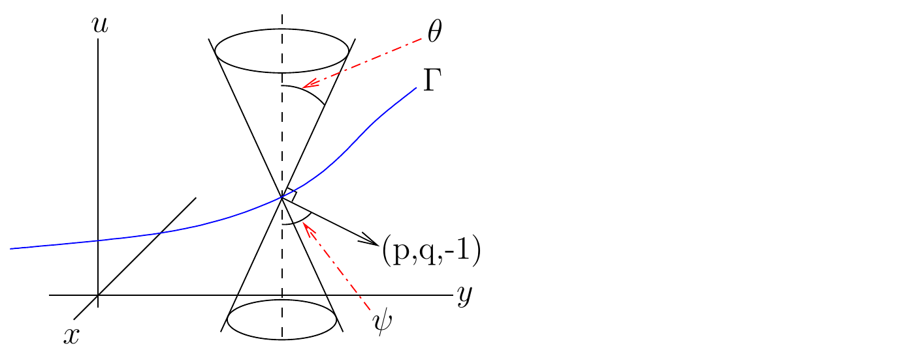

Tentang batas ini. Batas kumulatif besar ini
menuntaskan bagian PDP orde pertama umum sampai baris 1591 sumber beku.
Isinya mencakup bukti lengkap teorema permukaan integral, catatan
lanjutan, contoh nonlinear, dan contoh eikonal beserta dua gambar
bersumber terverifikasi.
Bukti (lanjutan Teorema 1.3.1).
(i) Pembuktian bahwa
merupakan permukaan yang baik identik dengan pembuktian yang diberikan
pada (i) dalam pembuktian Proposisi sebelumnya
(ii) Keberadaan suatu permukaan
berasal dari Teorema Pemetaan Invers karena
berdasarkan hipotesis. Kita
dapat menuliskan
dan
di suatu lingkungan
sebagai fungsi dari
dan
.
Dengan mensubstitusikan ungkapan
dan
ini ke dalam
,
diperoleh persamaan
yang mendeskripsikan permukaan
.
Kita juga dapat mensubstitusikan ungkapan
dan
ini ke dalam
dan
untuk memperoleh
dan
.
(iii) Kita nyatakan bahwa
(1.3.22)
untuk semua
dan
.
Dari (1.3.6)
dan (1.3.13),
kita memperoleh
untuk semua
.
Dengan demikian,
konstan terhadap
,
berapa pun
.
Karena
untuk
berdasarkan hipotesis (1.3.18),
kita mendapatkan
untuk semua
dan
.
(iv) Kita perlu membuktikan bahwa permukaan baru
memenuhi
Untuk itu, cukup menunjukkan bahwa
(1.3.23)
dan
(1.3.24)
karena sistem
memiliki solusi
menurut Aturan Rantai, dan
solusi tersebut (secara lokal) tunggal karena
.
(1.3.23)
merupakan konsekuensi langsung dari tiga persamaan dalam (1.3.6).
Untuk membuktikan (1.3.24),
misalkan
Kita mempunyai
untuk semua
berdasarkan (1.3.23).
Selanjutnya, dari (1.3.6)
dan (1.3.13),
kita mendapatkan
untuk semua
.
Dari (1.3.22)
diperoleh
untuk semua
.
Jadi, kita mendapatkan persamaan diferensial biasa terpisahkan
Solusinya adalah
,
dengan
konstan terhadap variabel waktu, dan
Dari (1.3.19),
kita mempunyai
untuk
.
Dengan demikian,
adalah nol dan
untuk semua
dan
.
Ini membuktikan (1.3.24).
(v) Permukaan
memuat
berdasarkan konstruksinya. Selain itu, (1.3.1)
dipenuhi oleh
karena (1.3.22)
benar, dan
,
dan
untuk
dan
.
Untuk pengangkatan data gradien kompatibel yang sudah ditetapkan pada
kurva awal, keunikan solusi sistem karakteristik bersama keterbalikan
lokal peta parameter memberikan keunikan lokal permukaan ini. Jadi,
kalimat keunikan pada teorema berlaku untuk setiap pengangkatan tetap
tersebut; kurva awal yang sama dapat mempunyai lebih dari satu
pengangkatan kompatibel dan karena itu lebih dari satu permukaan
integral. ◻
Catatan 1.3.5. Jika
dan
diberikan untuk
,
permukaan integral yang memuat
bersifat tunggal.
Catatan 1.3.6. Pada proposisi sebelumnya, kita cukup
mengasumsikan bahwa (1.3.18),
(1.3.19),
dan (1.3.21)
dipenuhi untuk satu nilai
.
Bahkan, keberadaan
dan
untuk
sama sekali tidak diperlukan.
Misalkan
Karena
menurut hipotesis, kita
dapat menggunakan Teorema Fungsi Implisit untuk memperoleh
dan
bagi
di dekat
sedemikian sehingga
dan
;
yakni, (1.3.18)
dan (1.3.19)
berlaku bagi
di dekat
.
Karena kekontinuan, (1.3.21)
dengan demikian berlaku bagi
yang cukup dekat dengan
.
Dengan memilih interval
yang cukup kecil dan memuat
,
kita memenuhi hipotesis proposisi sebelumnya.
Catatan 1.3.7. Pada proposisi sebelumnya, kita tidak
hanya memperoleh kurva-kurva karakteristik, tetapi juga persamaan bidang
singgung permukaan integral di sepanjang kurva-kurva karakteristik;
yaitu,
Karena alasan inilah solusi persamaan-persamaan karakteristik disebut
strip karakteristik.
Contoh 1.3.8. Selesaikan persamaan diferensial
parsial nonlinear orde pertama
dengan syarat
.
Ini merupakan persamaan diferensial parsial berbentuk (1.3.1)
dengan
.
Oleh karena itu, persamaan-persamaan karakteristiknya adalah
dengan syarat awal
,
dan
,
dengan
dan
merupakan solusi dari
dan
Kita memperoleh
untuk semua
.
Dengan memulai dari persamaan karakteristik terakhir di atas, kita
memperoleh
,
,
,
,
dan
.
Dengan menyelesaikan persamaan untuk
dan
,
kita memperoleh
dan
.
Dengan mensubstitusikan ungkapan
dan
ini ke dalam
,
,
dan
,
kita memperoleh
,
,
dan
.
Perhatikan bahwa
dan
untuk semua
dan
,
sebagaimana yang diharapkan.
Contoh 1.3.9. Perhatikan persamaan gelombang
dengan
merupakan cepat rambat gelombang di titik
pada bidang. Seperti akan kita lihat, solusi persamaan gelombang
merupakan kombinasi linear suku-suku berbentuk
.
Jika
dan
,
dengan
merupakan cepat rambat rata-rata gelombang dalam medium, persamaan
gelombang memberikan
(1.3.25)
Fungsi
disebut indeks bias dan bilangan
disebut bilangan gelombang. Adapun panjang
gelombang adalah
.
Khususnya, dalam kasus lensa, panjang gelombang tidak melebihi satu
mikron, sedangkan ukuran panjang lainnya (mis. ketebalan dan
kelengkungan lensa) adalah beberapa milimeter. Dengan menormalkan semua
panjang terhadap skala panjang terbesar dalam sistem, kita dapat
menganggap bilangan gelombang tak berdimensi
sangat besar.
Kita mencari solusi (1.3.25)
berbentuk
.
Jika ungkapan untuk
ini kita substitusikan ke dalam (1.3.25)
dan hasilnya dibagi dengan
,
diperoleh
Dengan demikian,
Karena
diasumsikan sangat besar, secara hampiran berlaku
(1.3.26)
Persamaan diferensial parsial ini disebut persamaan
eikonal dan pertama kali dikemukakan oleh W. R. Hamilton pada
abad kesembilan belas. Persamaan ini merupakan persamaan mendasar dalam
optika geometris. Permukaan yang didefinisikan oleh
,
dengan
suatu konstanta, adalah muka gelombang. Informasi lebih
lanjut tentang persamaan eikonal dapat ditemukan dalam [J, McO, PinRub].
(a) Kita akan menyelesaikan persamaan eikonal untuk
konstan (yakni ketika cepat rambat gelombang
tidak bergantung pada posisi dalam medium) dan dengan syarat awal
.
Persamaan eikonal berbentuk
untuk
.
Oleh karena itu, persamaan karakteristiknya adalah
(1.3.27) Kita mempunyai
,
dengan
,
,
dan
untuk
.
Sementara itu,
dan
memenuhi
dan
untuk
.
Kita memperoleh
dan
.
Secara berurutan, kita mempunyai Kita menyelesaikan
dan
terhadap
dan
sehingga diperoleh
dan
.
Jika nilai-nilai
dan
ini kita substitusikan ke dalam ungkapan untuk
,
diperoleh permukaan integral
.
Penalaran serupa dengan
dan
memberikan
.
(b) Nilai-nilai yang mungkin bagi
dan
pada kurva
diberikan oleh
dan
Persamaan pertama menyatakan bahwa
dan persamaan kedua menyatakan bahwa proyeksi
pada
adalah
Agar hal
ini mungkin terjadi, norma vektor
harus lebih besar daripada atau sama dengan
,
sebagaimana dapat dilihat pada Gambar 4
(atau dari pertidaksamaan Schwarz). Dengan demikian, kita memerlukan
(1.3.28)
Jika (1.3.28)
dipenuhi secara ketat, kita mengatakan bahwa
bersifat serupa-ruang dan masalah Cauchy memiliki sekurang-kurangnya
satu solusi. Jika berlaku kesamaan, kurva tersebut merupakan kurva
karakteristik (null); teorema nonkarakteristik sebelumnya tidak menjamin
keberadaan solusi. Jika (1.3.28)
tidak dipenuhi, kita mengatakan bahwa
bersifat serupa-waktu dan masalah Cauchy tidak memiliki solusi.
Pada bagian (a) di atas, kita mempunyai
,
,
dan
.
Jadi, (1.3.28)
dipenuhi secara ketat dan kurva
bersifat serupa-ruang. Hal ini menjelaskan adanya dua solusi yang telah
kita temukan.

Proyeksi vektor turunan (x0 terhadap s,
y0 terhadap s) pada vektor (p0, q0), dengan panjang proyeksi tidak
melebihi norma vektor turunan tersebut.
(c) Perhatikan kurva
,
dengan
,
,
dan
untuk
.
Karena (1.3.28)
dipenuhi secara ketat,
bersifat serupa-ruang dan kita seharusnya menemukan sekurang-kurangnya
satu solusi; pada kenyataannya, kita akan menemukan dua solusi.
dan
memenuhi
dan
untuk
.
Kita memperoleh
dan
,
atau
dan
.
Kita masih mempunyai persamaan karakteristik yang diberikan dalam (1.3.27).
Kita dapat menyelesaikan
dan
terhadap
dan
sehingga diperoleh
Jika nilai-nilai
dan
ini kita substitusikan ke dalam ungkapan untuk
,
diperoleh permukaan integral
Penalaran serupa dengan
dan
menghasilkan
Kita mendapati bahwa
menyatakan muka gelombang karena
konstan pada lingkaran-lingkaran ini.
merupakan muka gelombang yang bergerak menjauhi titik asal ketika
bertambah, sedangkan
merupakan muka gelombang yang bergerak menuju titik asal dan mencapainya
pada
.
Catatan 1.3.10. Persamaan eikonal berbentuk
.
Karena bentuk khusus persamaan ini, kita dapat mendeskripsikan
kerucut-kerucut Monge untuk masalah tersebut. Kerucut-kerucut ini
mempunyai sumbu yang sejajar dengan sumbu
dan sedemikian sehingga sudut
antara sumbu dan garis pelukis kerucut memenuhi
(Gambar 5).
Sesungguhnya, setiap vektor
dengan
tegak lurus terhadap suatu bidang singgung yang menyelubungi Kerucut
Monge. Selain itu, sudut
antara vektor
dan sumbu vertikal memenuhi
.
Karena rotasi sebesar
pada bidang vertikal yang memuat vektor
dan sumbu vertikal mentransformasikan vektor ini menjadi vektor searah
garis perpotongan antara Kerucut Monge dan bidang singgung yang tegak
lurus terhadap
,
sudut
memenuhi
.

Representasi skematis Kerucut Monge untuk
persamaan eikonal, beserta kurva awal serupa-ruang dan
serupa-waktu.
Atribusi dan hak. Karya sumber oleh Benoit Dionne
dilisensikan berdasarkan Creative
Commons Attribution-NonCommercial-ShareAlike 4.0 International.
Terjemahan dan perubahan yang dicatat menggunakan lisensi komponen yang
sama. Produksi terjemahan dan edisi dibantu OpenAI Codex gpt-5.6-sol,
Ultra; semua kredit penulis dan kontributor manusia tetap dipertahankan.
Ini bukan terbitan atau dukungan resmi Benoit Dionne maupun University
of Ottawa.